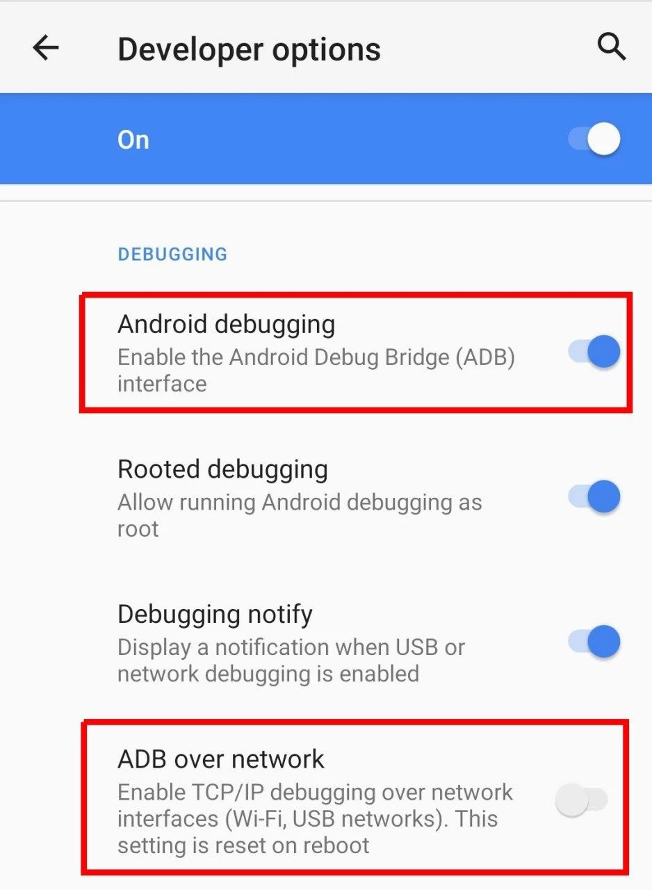

Android 10 e inferior
Consejo
¿Utilizando Android 11 o superior? Android 11 guía es más conveniente.
En Android 10 y versiones anteriores, ADB debe estar habilitado en modo USB primero. Luego puedes cambiar a modo de red o TCP/IP. El uso de ADB en modo USB requiere un ordenador.
Conectar el dispositivo Android a un PC y cambiar al modo TCP/IP es un proceso único. Pero necesitas repetir esto después de cada reinicio.
Nota
Antes de continuar, asegúrate de que has habilitado las Opciones de Desarrollador.
Algunos dispositivos (generalmente ROMs personalizados) tienen la configuración ADB a través de la red o Debugging disponible en las opciones de desarrolladores:

En tales casos, no necesita conectar el dispositivo a un PC. Sólo activa el modo ADB TCP/IP desde dentro de las Opciones de Desarrollador.
Para otros dispositivos que sólo tienen ajustes en modo ADB USB disponibles en Opciones de Desarrollador, siga las instrucciones que se indican a continuación.
Habilitar TCP/IP¶
-
Habilitar la depuración Android / depuración USB en Opciones de Desarrollo.
-
Conecte el dispositivo al PC con un cable USB.
-
En PC, abra una ventana de terminal (o el símbolo de espera de órdenes en Windows) y ejecute:
adb tcpip 5555donde
5555es el puerto en el que desea iniciar el daemon ADB (adbd) en modo TCP/IP. Utilizarás este número de puerto más tarde.
Consejo
Debes tener disponible el ejecutable adb en tu PC para ejecutar el comando anterior. Si no, aquí está el enlace de descarga.
Una vez completados estos pasos, TCP/IP (depuración inalámbrica) debe estar habilitado.
Verificación (Opcional)¶
-
Desconecte el cable USB del dispositivo.
-
Conecte su dispositivo y PC a una red Wi-Fi común.
-
Obtenga la dirección IP del dispositivo (normalmente en la configuración Wi-Fi o en Configuración → Acerca de), diga que es
192.168.1.1. -
En PC, ejecutar:
adb connect 192.168.1.1 -
Ejecutar de nuevo:
adb shell id -u
Debería imprimir 2000 (o 0).
Conectar la aplicación a ADB¶
- Abre la aplicación y pulsa Acceso ADB1.
- Introduzca el puerto
5555(desde la sección anterior) y pulse conectar. - Permitir depuración USB si se le pide.
Nota
Deberías dejar la depuración USB habilitada en Opciones de Desarrollo. Desactivar el ADB desconectará la aplicación del ADB.
-
Si ADB Access no es visible en el menú de cajón, mantén pulsado el icono/etiqueta de la aplicación (en el cajón), a menos que aparezca la casilla ADB Access. ↩